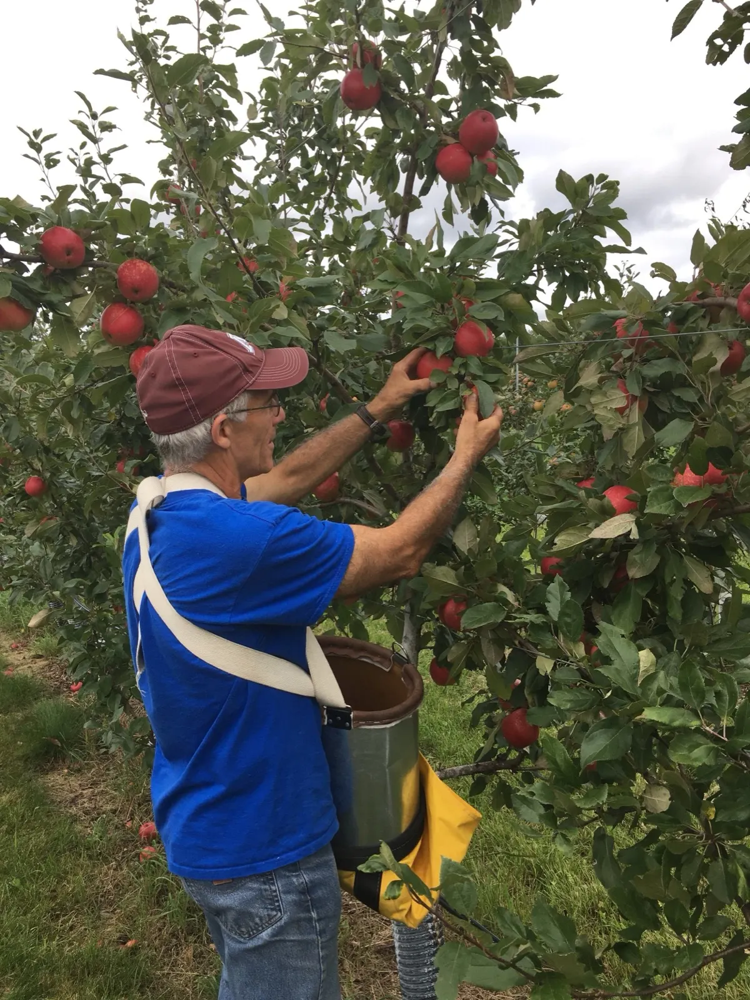

Our farm's story
“Our first planting of strawberries was done by hand, one plant at a time, watering each one as we planted them.”
Stuart Lavalier. We now have a planter, which makes that job a lot easier.

Stuart in the orchardGrowing up just south of Grand Rapids, we always had a large garden. Taking horticulture classes at the University, I discovered the problem behind my family's small seedy strawberries. The berry patch was a goal I envisioned after completing my horticulture degree from the University of Minnesota.
The farm started during my second year of teaching in Elk River. For 32 years I taught elementary students for nine months of the year and farmed for the other three in Grand Rapids. In 2010 I retired from teaching.
A 10-foot high deer fence built around the farm to keep the deer out was the impetus for growing apples. We started with just strawberries, and over the years added blueberries, apples, sour cherries and even a few lingonberries and haskaps.